2026-05-13
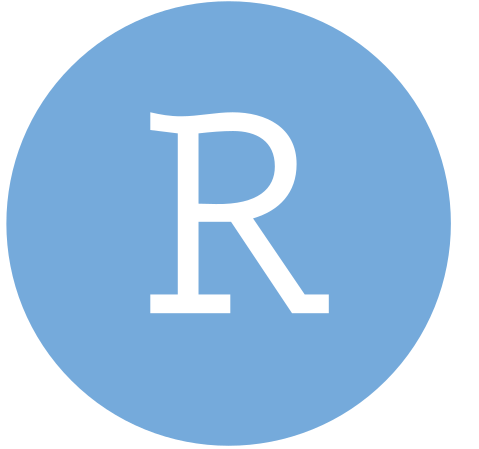
But the data science world has expanded…
The next-generation data science IDE built for Python and R. It combines the power of a full-featured IDE with interactive data science tools for Python and R.
Positron might be right for you if you…
Important
RStudio is not going away! It continues to be supported by Posit, and there is currently no timeline for deprecation. RStudio and Positron are two different options for R users, and you can choose the one that best fits your workflow and preferences.
The core functionality and layout you rely on in RStudio is still there in Positron.
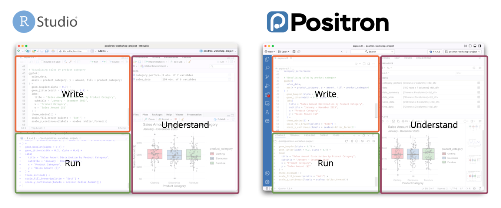
RStudio-only features
Unique to Positron
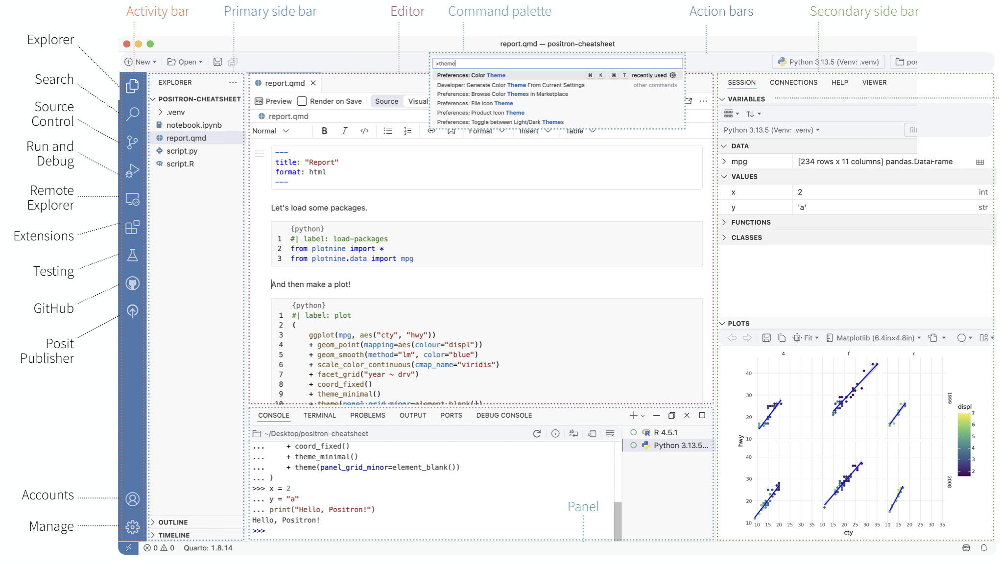
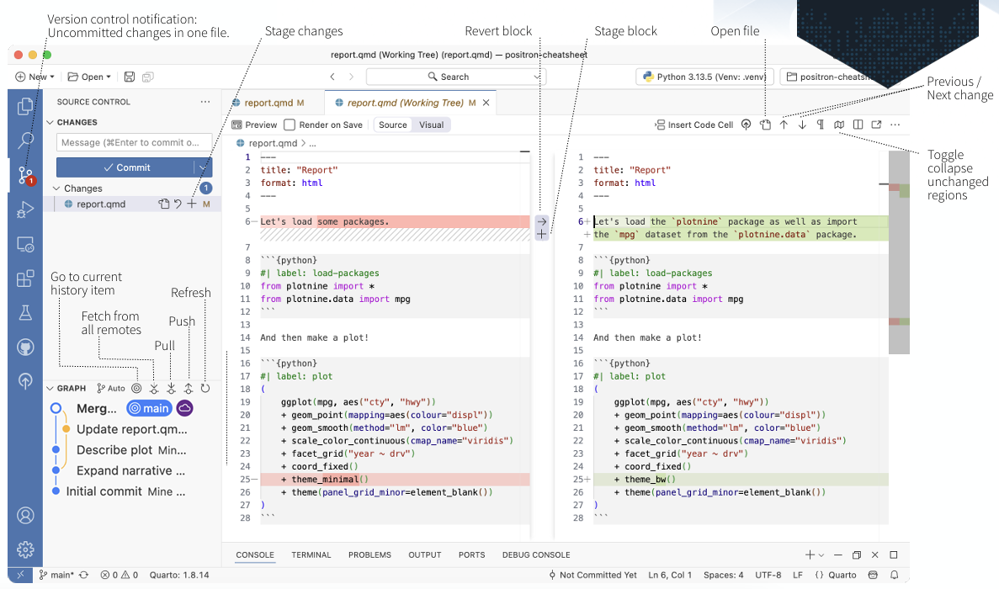
View() but better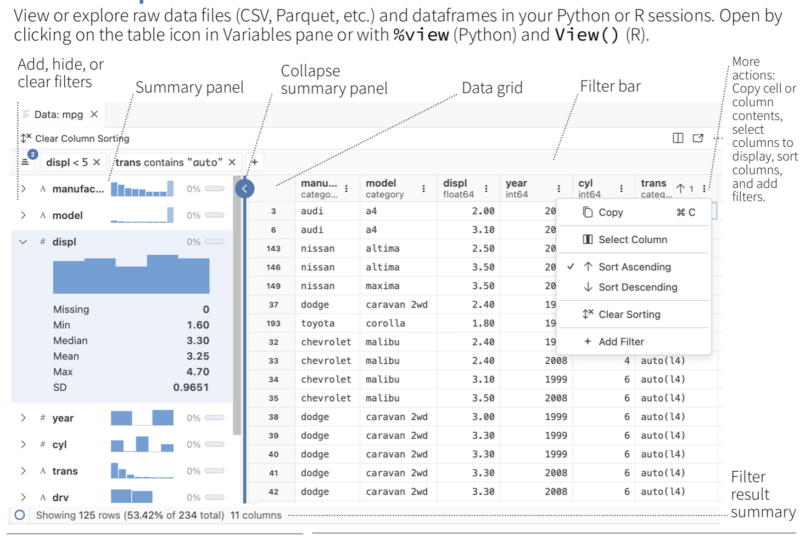
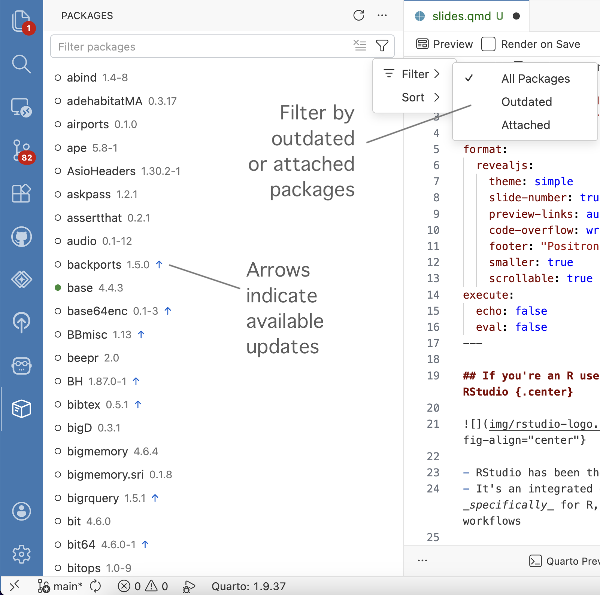
Ctrl+Shift+T / Cmd+Shift+TCmd+Shift+P (Mac) / Ctrl+Shift+P (Windows/Linux)
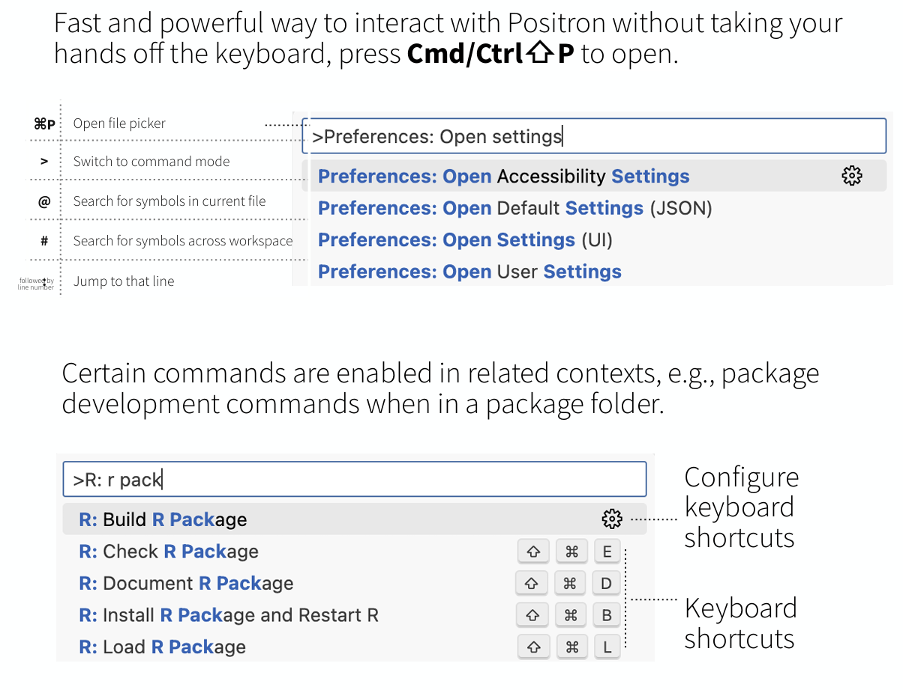
Tip
Can’t find the button you’re looking for? → Open the Command Palette and start typing. This is always a good place to start.
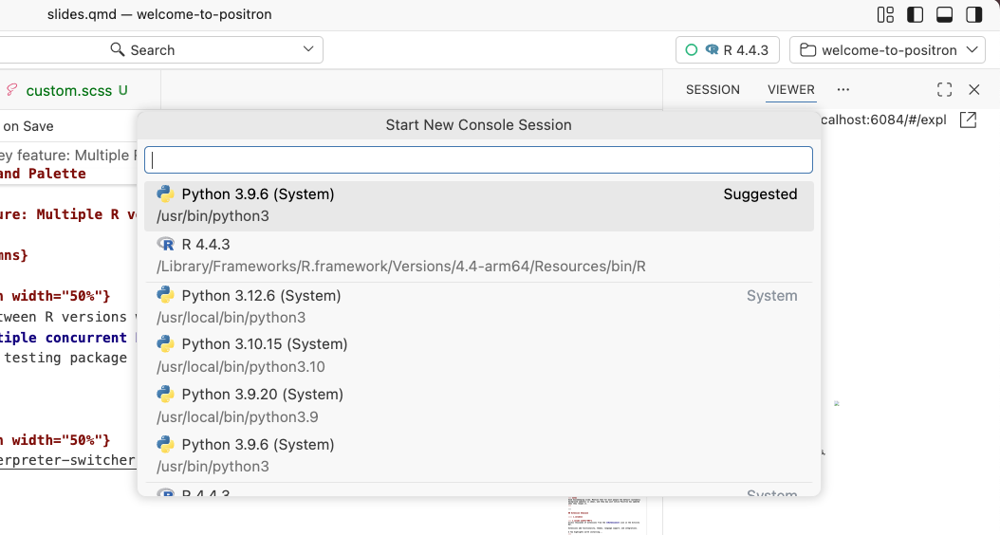
Positron Documentation
R session crashed or frozen?
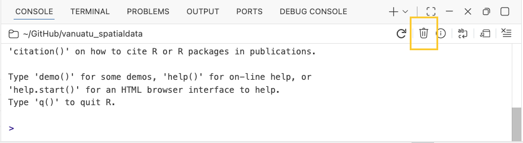
Positron checks for monthly release updates automatically (you can opt out if you prefer to manually manage your updates).
| Platform | Update behavior |
|---|---|
| macOS | Downloads & installs in the background |
| Windows (user install) | Downloads & installs in the background |
| Windows (system install) | Downloads; notifies via 🔔 icon (bottom left) |
| Linux | Shows a notification when update is available |
Positron Documentation
Access thousands of extensions from the Extensions icon in the Activity Bar.
Extensions add functionality, themes, language support, and integrations.
A few highlights worth installing…
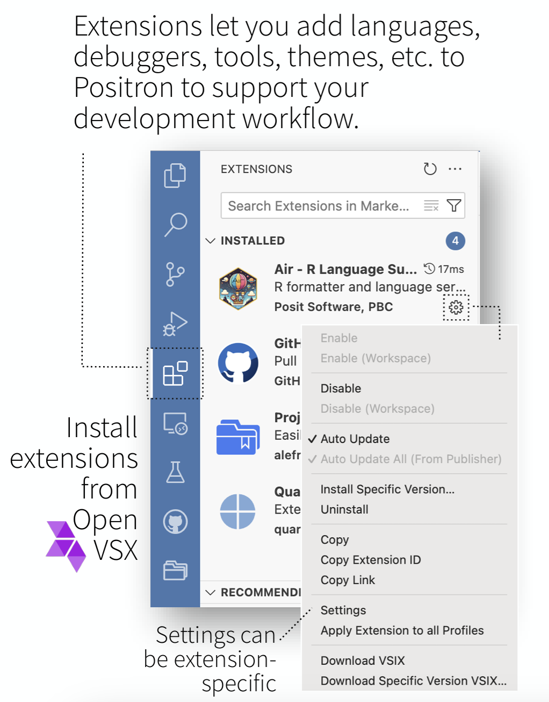
styler for many use cases)Note
emLab’s revised SOP for coding projects will require using Air for consistent R formatting across the team! This will help standardize code quality and faciliate collaboration and code review.
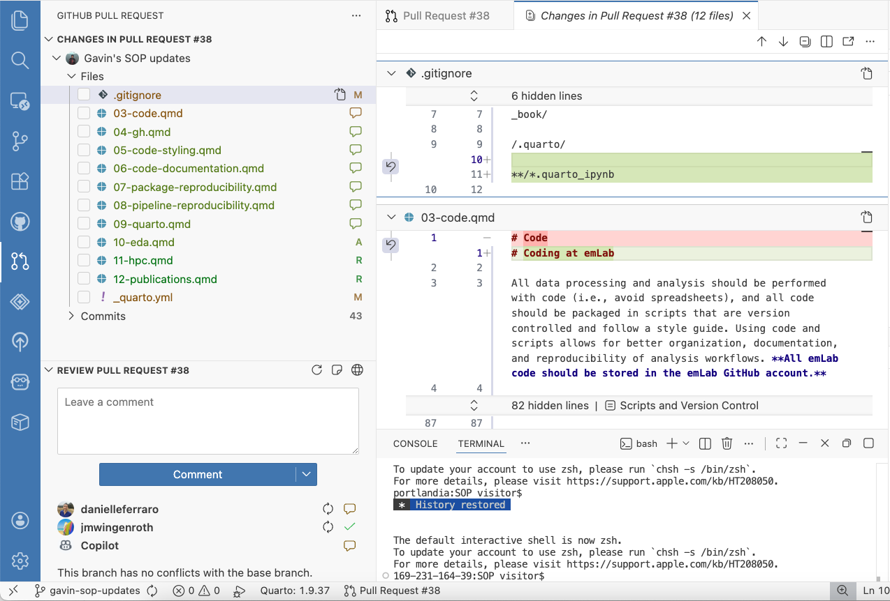
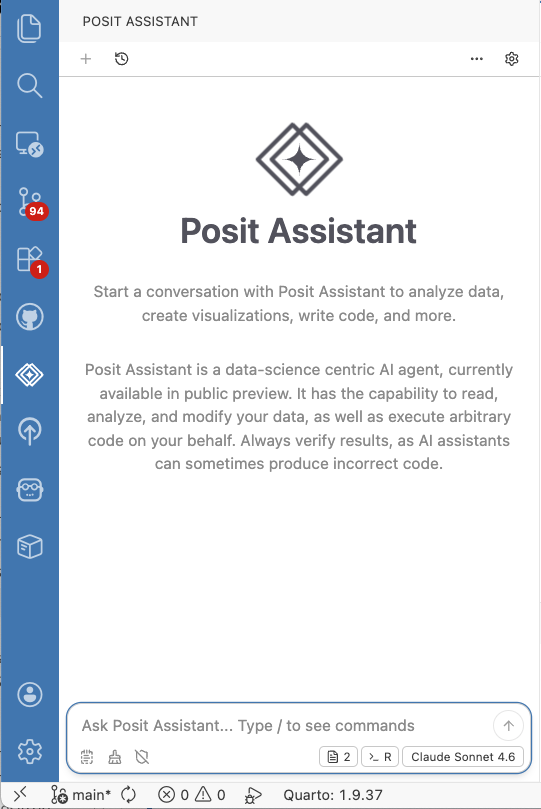
| Extension | What it does |
|---|---|
| Shiny | Run and preview Shiny apps in Positron |
| Indent-Rainbow | Colorizes indentation levels |
| Rainbow CSV | Colorizes CSV columns for readability |
| GitHub Actions | Interact with GH Actions workflows |
Step 1: Pick your theme
Step 2: Enable RStudio keybindings
Positron uses VS Code’s keybinding system, but you can enable a preset that restores RStudio-like shortcuts.
In Settings (Cmd+Shift+P → Preferences: Open Settings (UI)) or settings.json:
This restores familiar shortcuts like Cmd+Enter to run code, Cmd+Shift+M for the pipe, etc.
Step 3: Run the built-in migration walkthrough
Cmd+Shift+P → Welcome: Open Walkthrough… → “Migrating from RStudio to Positron” (also on the homepage of a fresh Positron session)
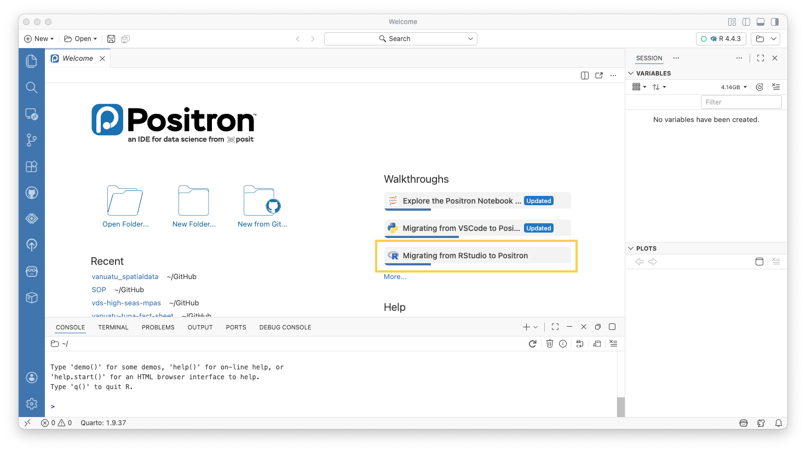
Easily navigate long scripts:
Gives you a bird’s-eye view of the document for quick navigation.
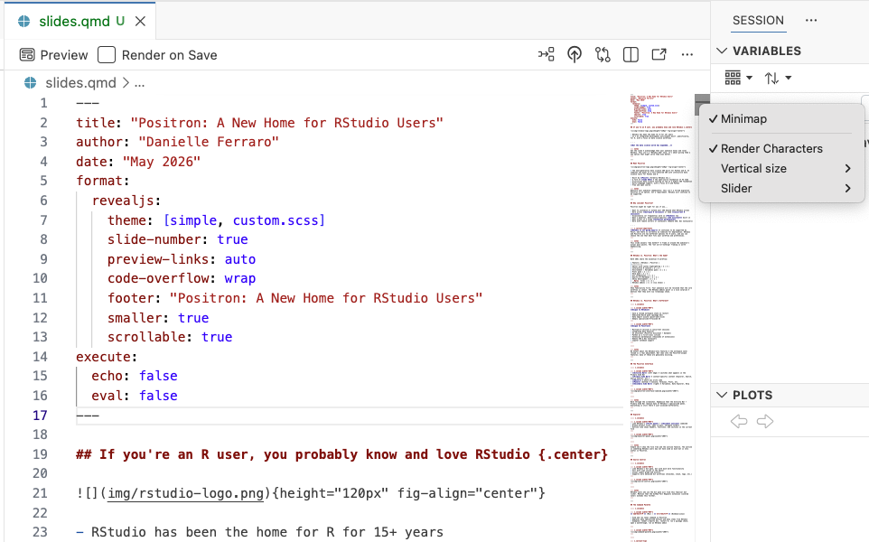
Search for any string across your entire project — no grep needed:
Cmd+Shift+F)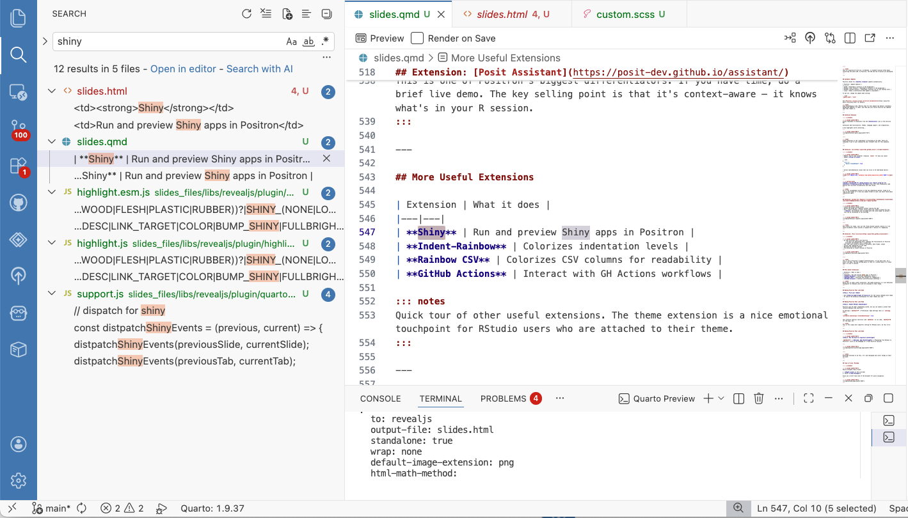
By default, Positron (like VS Code) opens files in preview mode - if you don’t edit the file, it will close when you open another.
To disable:
Cmd+Shift+P → Preferences: Open Settings (UI)enablePreviewPositron (via VS Code) can behave differently from RStudio with tab vs. space indentation, especially when mixing code from different sources.
Solution: Use Air
editor.formatOnSave for R filesWhen using the GitHub Pull Requests & Issues extension, commit messages can inadvertently auto-populate as:
Fixes #<issue-number>This will close the issue when merged, which may not be what you want.
To fix:
Some limitations in the GitHub Issues extension compared to github.com:
These are known limitations tracked in the extension’s issue tracker.
For complex issues with images or heavy formatting, write them directly on github.com.
Cmd+Shift+P → Welcome: Open Walkthrough…Positron: A New Home for RStudio Users